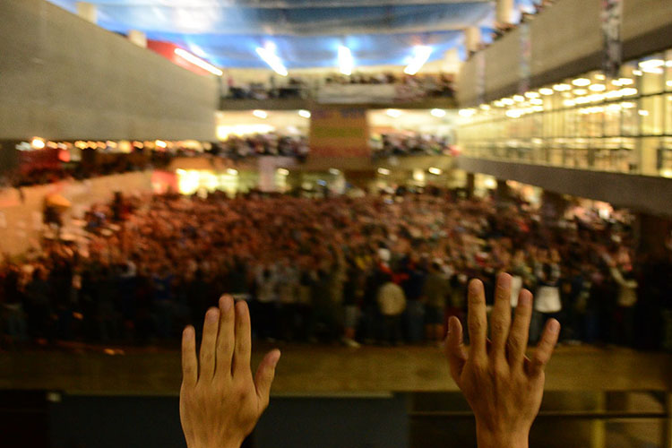

<h̍̇ͫ̅҉̟͙̜̘̙̬>
greves estudantis (2011) //
no início do que agora se entende por um grande processo político que passou pelas manifestações de julho de 2013 e continua se desdobrando, estudantes universitários traziam temas sociais e disputas internas para discussão. suas pautas enfrentavam dificuldade de serem compreendidas pela população em geral.



todo o material deste site é disponibilizado sob a licensa Creative Commons Attribution-ShareAlike 4.0 International